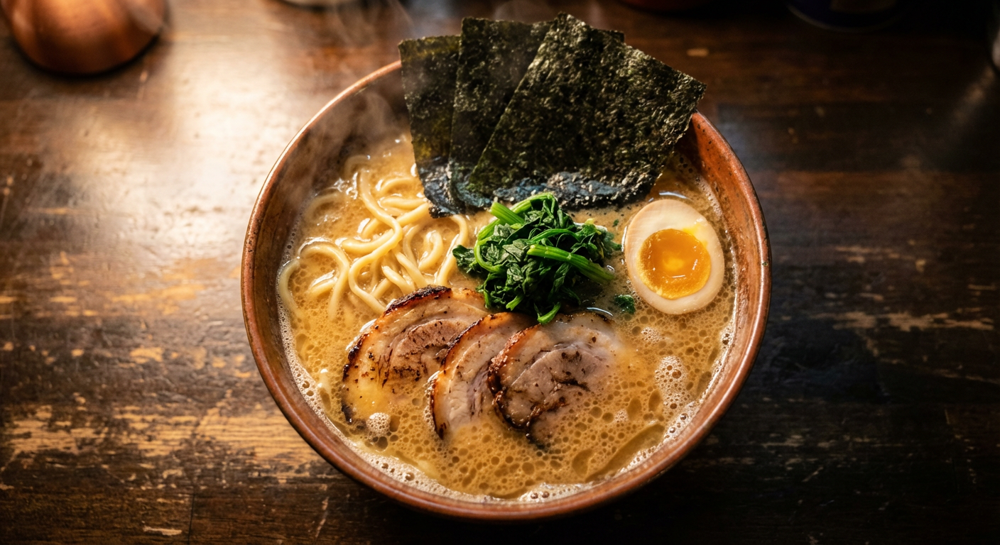
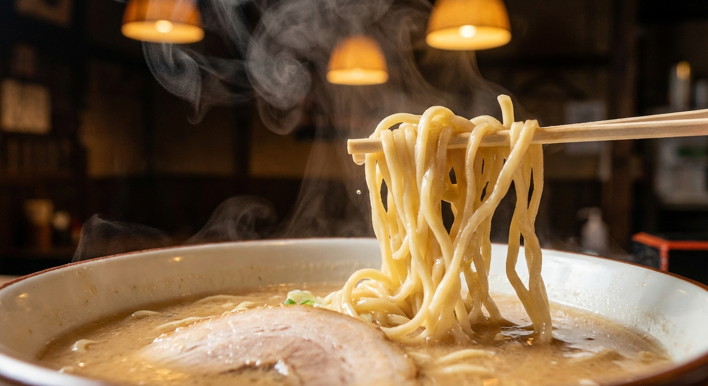

Iekei Ramen · College St, Toronto
Yokohama-style iekei ramen. Rich pork bone broth simmered for hours. Thick noodles. A bowl of rice to finish what the broth started.
Yokohama Tradition
Born in 1974 at a small shop in Yokohama, iekei ramen blends two worlds: the thick tonkotsu pork bone broth of Kyushu with the soy-forward punch of Tokyo shoyu. The result is something richer and bolder than either.
Machida Shoten brings that tradition to College St. The broth takes hours. The noodles are thick and straight. Every bowl comes with chashu, spinach, nori, and a soft-boiled egg.

The Ritual
Every bowl comes with a side of rice. You eat the noodles first, then mix the rice into what's left of the broth. Reviewer after reviewer says the rice is the reason they come back.
Same story, different people.
I knew from the very first sip of the pork broth that I'd be coming back. The flavor is seriously impressive — rich, deep, and incredible.
Hands down the most flavourful ramen I've had in Toronto. The Kara Ramen is outstanding.
The real star for me was the broth; it's so good that I couldn't resist ordering a bowl of rice to mix in at the end.

The Noodles
Iekei noodles are thicker than most ramen. Straight, dense, with a bite that pushes back before it gives. They soak up broth like a sponge, so every slurp carries the full weight of that tonkotsu.
The chashu dissolves on your tongue before you think to chew. The nori goes soft at the edges where it meets the broth. The egg splits open golden.